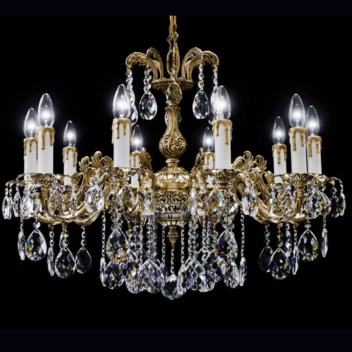
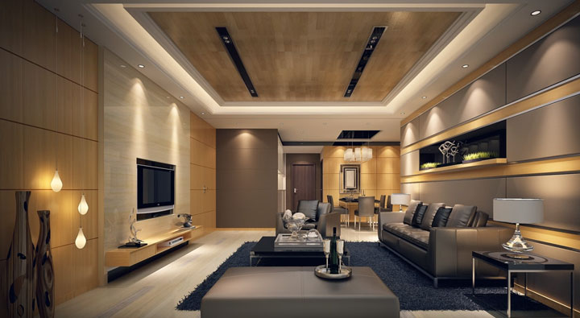
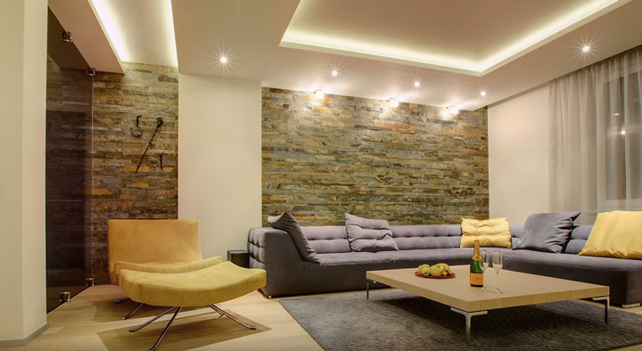
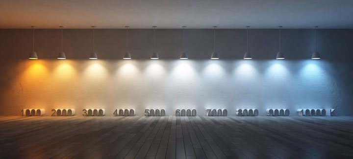

Освещение
Если вы хотите сделать хорошее качественное освещение в комнатах своей квартиры или дома, вам необходимо соблюдать 7 основных правил.
Именно их придерживаются большинство дизайнеров и проектировщиков при составлении своих дорогостоящих проектов. Они не такие сложные и будут понятны любому пользователю и заказчику.
Количество источников света
По возможности избегайте использования только одного источника света. Всем известный классический способ — это освещение комнаты при помощи большой люстры.подключение люстры через двойной выключатель
С одной стороны конечно здорово, когда можно осветить большое пространство всего одним мощным светильником. Никаких проблем с кучей проводов, выбором точек крепежа.

Однако с точки зрения хорошего светодизайна, лучше освещать пространство несколькими локальными источниками света. Например торшерами, одиночными подвесами, настенными светильниками.подсветка гостиной
Самый распространенный вариант – это точечные светильники.
Все это многообразие дает вам возможность комбинировать световую среду, делать ее независимой и вариативной. Использовать свет только там и только тогда, когда это необходимо.
Более того, это здорово экономит расход электроэнергии, позволяет сформировать среду более равномерно. У вас не будет большого контраста между громоздкой люстрой, которая висит в центре зала и темными углами комнаты.много светильников по частям комнаты
В таком пространстве одинаково хорошо себя чувствует и тот, кто ест за обеденным столом, и тот кто читает книгу возле торшера.
Типы освещения
Всегда учитывайте функционал комнаты при выборе типа освещения. Всего существует три основных типа:
- отраженное
- акцентное
- прямое или направленное

Прямое – это свет от встроенных или потолочных светильников светящих строго сверху вниз. Сюда же можно отнести настольные лампы.
Объекты при таком освещении будут казаться вам немного более объемными, нежели их реальные размеры.настольная лампа для направленного освещения типы освещения
Для гостиной и спальни очень хорошо подойдут отраженные источники света, которые позволяют создать мягкую, равномерно освещенную среду, комфортную для глаз.
Акцентный свет – это яркий, направленный источник. Он применяется там, где нужно привлечь внимание к чему-то, подчеркнуть отдельный предмет или элемент интерьера.трековые светильники правила подключения и монтажа
Однако у этого источника света есть большой минус – он очень сильно слепит глаза.
Поэтому использовать его нужно точечно, вдумчиво, и только там где это необходимо и приемлемо.
Подсветка стен
Никогда не забывайте про подсветку вертикальных поверхностей. Порядка 80% нашего внимания в комнатах приковано именно к стенам.почему важно подсвечивать стены

Когда мы перемещаемся, общаемся друг с другом, просто сидим в кресле, наш взгляд всегда обращен на вертикальные поверхности, а не на потолок.
Потолочное пространство при этом занимает только 15% внимания, а полу достается всего лишь 5%.как сделать подсветку пола
Поэтому если хотите получить комфортную комнату, где будет приятно находиться, не забывайте про подсветку стен. В больших гостиных сосредоточение светильников по периметру, следует делать исходя именно из этого правила.
Одна цветовая температура
В хорошем, целостном, законченном интерьере световая среда должна быть монотонной.наглядная разница цветовой температуры светильников

Это означает, что для освещения необходимо использовать светильники с одинаковой цветовой температурой.
Редким исключением может быть тот случай, когда вы хотите подчеркнуть фактуру каких-либо материалов, либо выделить отдельные предметы интерьера.
Размещение светильников
Старайтесь размещать светильники так, чтобы максимально исключить прямой контакт глаз с источником света.комфортное хорошее освещение зала
По-хорошему, вы их вообще не должны видеть напрямую. К примеру, в ресторанах высокого уровня прямо в инструкциях прописывают, что приборы освещения не должны контактировать с глазами посетителей.
Это позволяет людям сосредоточится на самом главном – на вкусной и здоровой пище, а не отвлекаться на слепящие лампочки.ошибки дизайна освещения на кухне
Также не используйте направленный свет в спальне. Особенно над кроватью.направленный свет над кроватью в спальне
Правильнее будет распределить светильники по периметру, обходя свое ложе.освещение над кроватью как правильно
Если же в интерьере все-таки необходимо применить акцентный свет, то воспользуйтесь специальными аксессуарами. Например антибликовыми решетками.антибликовые решетки
Они практически полностью исключают контакт глаз с лампочкой или светодиодом внутри светоточки.